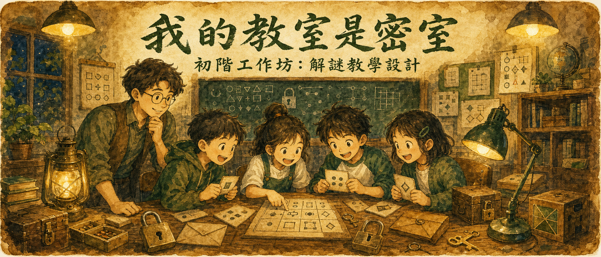
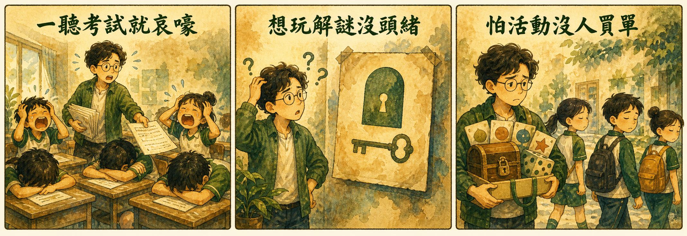
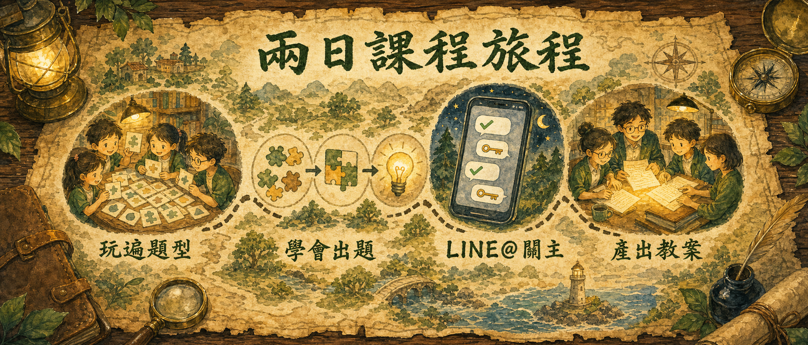
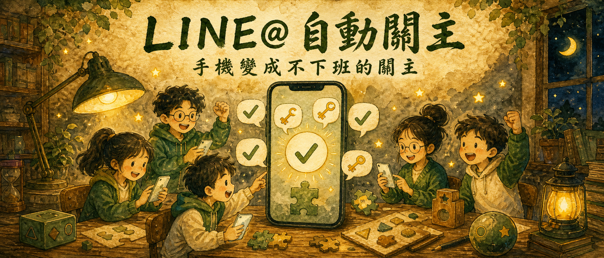

解謎教學設計 × 我的教室是密室
一支手機＋一份考卷，教室就能變密室
D1 玩遍課堂解謎題型、學會出題、把手機變成自動關主；
D2 走出戶外玩一場解謎，回來親手設計出你的第一份遊戲教案。
同樣的知識點，印在考卷上學生哀鴻遍野。不是內容無聊，是包裝方式讓人提不起勁。
密室逃脫這麼紅，也想在班上來一場。但謎題怎麼出？機關去哪買？光用想的就放棄了。
好不容易生出一個遊戲，學生兩分鐘就破關——或卡死全場。差的不是熱情，是設計方法。

不用花大錢做機關——考卷上的知識點，就是謎題最好的素材；
你口袋裡的手機，就是二十四小時不下班的關主。
D1 在教室練功，D2 出門實戰——回家時手上就有一份能用的教案。

從姓名密碼、文字圖像謎題到真人 RPG 闖關——幾十種課堂就能用的題型，先當玩家全部玩過一輪，玩過才知道哪裡好玩。
先想答案 → 加上謎題 → 檢查測試。把學科知識點包進謎題裡，學生解謎的同時就在複習——玩完印象反而最深。
不會編故事？沒關係，電影動漫就是現成的劇本庫。學會把題目裝進故事情境，無聊的題組立刻變成冒險任務。
手把手帶你創官方帳號、設定自動回復——學生輸入答案，手機自動判對錯、給下一關線索。你只要泡杯茶看他們瘋狂。

走出教室，玩一場非電子的戶外導覽解謎——體驗動線引導、景點結合與團隊合作的設計，感受遊戲怎麼帶人認識一個地方。
目的與場地 → 故事目標 → 單線／多線／發散路線 → 關卡數量 → 結束方式。一張支狀圖，把「憑感覺」變成「照流程」。
個人構思 20 分鐘、小組共備 40 分鐘，套上教案模板——把兩天學的題型、故事、流程全部組裝成一份完整遊戲教案。
你的教案現場給別組玩，講師與夥伴即時回饋——帶回家的不是草稿，是試玩修正過、下週就能上場的版本。